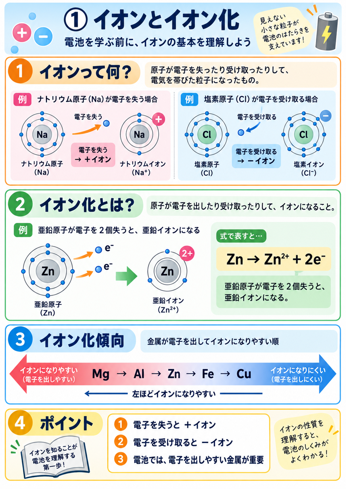
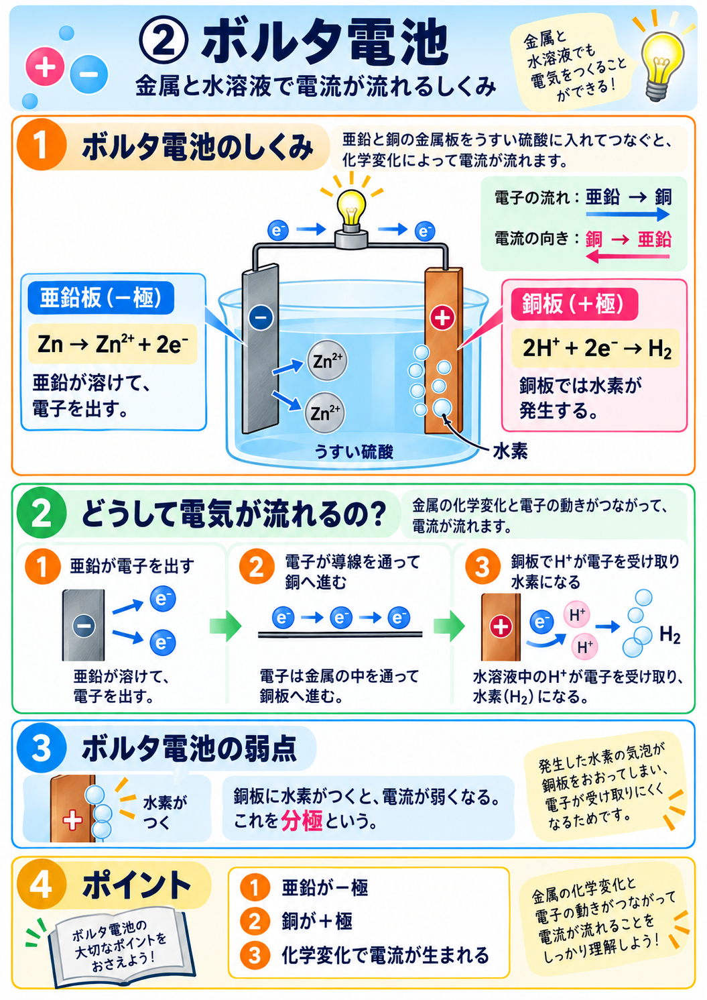
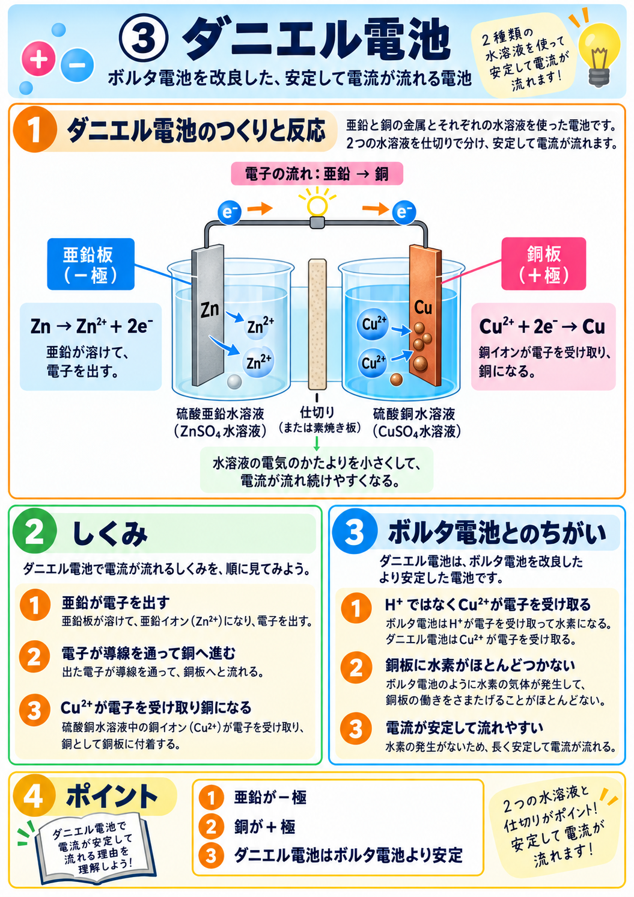
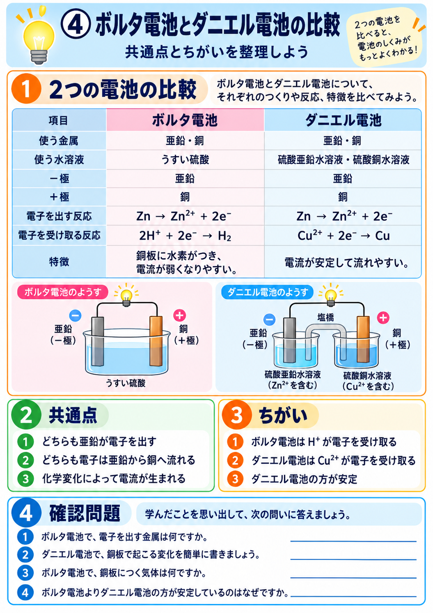
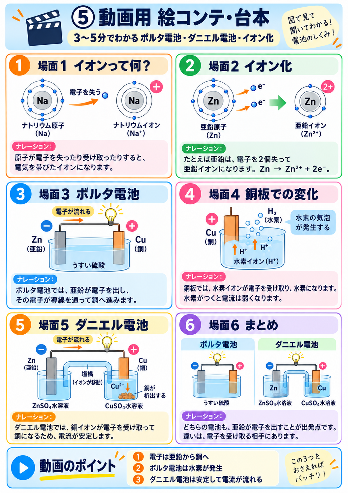

電子を失うと ＋イオン
Zn
e⁻
e⁻
→
Zn²⁺
e⁻e⁻
Zn → Zn²⁺ + 2e⁻
Znからe⁻が2個出る → Zn²⁺になる → 元のZnへ戻る、を自動で繰り返します。
中学生向け｜イオン → ボルタ電池 → ダニエル電池 → 比較 → 確認テスト
まずは「電子を失う・受け取る」と、イオンになる仕組みを見てみましょう。
Znからe⁻が2個出る → Zn²⁺になる → 元のZnへ戻る、を自動で繰り返します。
左ほど「電子を出してイオンになりやすい」金属です。
亜鉛と銅をうすい硫酸に入れると、亜鉛が電子を出し、電子が導線を通って銅へ移動します。
うすい硫酸では、H₂SO₄が電離して H⁺ と SO₄²⁻ が水溶液中に存在します。
Zn → Zn²⁺ + 2e⁻電子：亜鉛 → 銅2H⁺ + 2e⁻ → 2H → H₂ボルタ電池を改良し、銅イオン Cu²⁺ が電子を受け取るようにした電池です。
Zn → Zn²⁺ + 2e⁻電子：亜鉛 → 銅Cu²⁺ + 2e⁻ → Cu「電子を出す側」は同じ。大きな違いは「電子を受け取る相手」です。
| 項目 | ボルタ電池 | ダニエル電池 |
|---|---|---|
| －極 | 亜鉛 Zn | 亜鉛 Zn |
| ＋極 | 銅 Cu | 銅 Cu |
| 電子の流れ | 亜鉛 → 銅 | 亜鉛 → 銅 |
| 電子を出す反応 | Zn → Zn²⁺ + 2e⁻ | Zn → Zn²⁺ + 2e⁻ |
| 電子を受け取るもの | H⁺ | Cu²⁺ |
| ＋極での反応 | 2H⁺ + 2e⁻ → H₂ | Cu²⁺ + 2e⁻ → Cu |
| 特徴 | 水素がつき、電流が弱くなりやすい | 電流が安定して流れやすい |
全5問。まちがえた問題は最後にもう一度出します。
作成済みの図解を一覧で確認できます。




